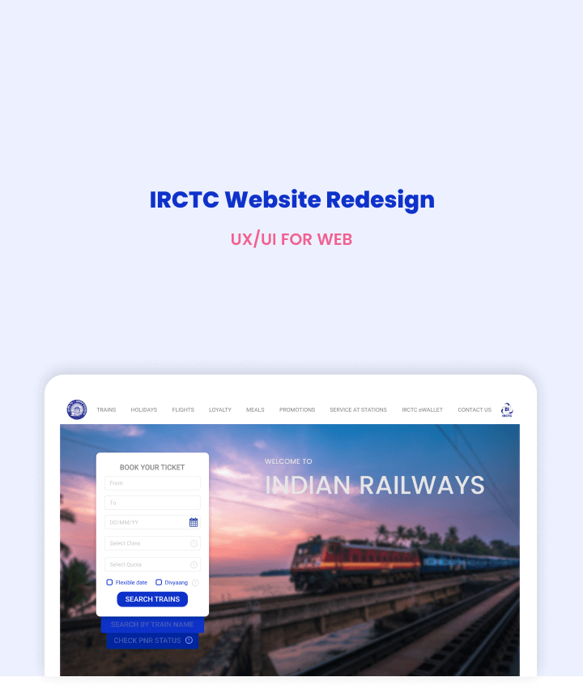
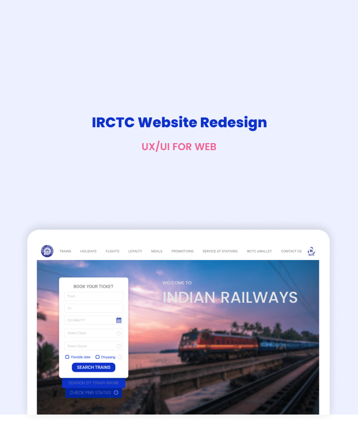

OVERVIEW
IRCTC is the official website for Indian Railways. It is the platform that Indians use for booking train tickets. On an average, 500,000 tickets are booked on IRCTC per day.
There is no doubt that with a web service as extensive as IRCTC, there would be UX and UI pain points. So I decided to redesign this website in order to identify and rectify as many of this setbacks. It was an extremely challenging process because of the high complexity and the high impact the website has on the citizens of India.
DURATION
November, 2018
USER RESEARCH
My research consisted of interviews with IRCTC users that have different levels of usage. My interview process involved asking them to book a ticket with certain constraints while observing their behaviour, reactions and apparent pain points. After this, I also asked them how the experience was and what they wish they could change about the website. I classified the results into the following 3 personas.